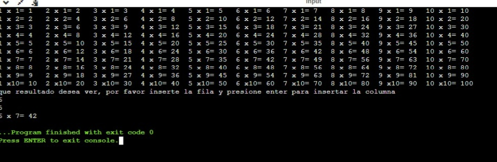

Se debe de imprimir el siguiente cuadro El usuario deberá insertar la fila y columna de la cual desea ver el resultado, el resultado de cada celda debe estar previamente calculado en una matriz bidimensional la cual cada resultado obedecerá a la fila y columna insertada por el usuario
CODIGO
import java.util.Scanner;
public class Main
{
public static void main(String[] args) {
Scanner x = new Scanner(System.in);
int fila,columna,filas,columnas;
String dato[][] =new String[10][10];
dato[0][0] = "1 x 1= 1 ";
dato[0][1] = "2 x 1= 2 ";
dato[0][2] = "3 x 1= 3 ";
dato[0][3] = "4 x 1= 4 ";
dato[0][4] = "5 x 1= 5 ";
dato[0][5] = "6 x 1= 6 ";
dato[0][6] = "7 x 1= 7 ";
dato[0][7] = "8 x 1= 8 ";
dato[0][8] = "9 x 1= 9 ";
dato[0][9] = "10 x 1= 10";
dato[1][0] = "1 x 2= 2 ";
dato[1][1] = "2 x 2= 4 ";
dato[1][2] = "3 x 2= 6 ";
dato[1][3] = "4 x 2= 8 ";
dato[1][4] = "5 x 2= 10 ";
dato[1][5] = "6 x 2= 12 ";
dato[1][6] = "7 x 2= 14 ";
dato[1][7] = "8 x 2= 16 ";
dato[1][8] = "9 x 2= 18 ";
dato[1][9] = "10 x 2= 20";
dato[2][0] = "1 x 3= 3 ";
dato[2][1] = "2 x 3= 6 ";
dato[2][2] = "3 x 3= 9 ";
dato[2][3] = "4 x 3= 12 ";
dato[2][4] = "5 x 3= 15 ";
dato[2][5] = "6 x 3= 18 ";
dato[2][6] = "7 x 3= 21 ";
dato[2][7] = "8 x 3= 24 ";
dato[2][8] = "9 x 3= 27 ";
dato[2][9] = "10 x 3= 30";
dato[3][0] = "1 x 4= 4 ";
dato[3][1] = "2 x 4= 8 ";
dato[3][2] = "3 x 4= 12 ";
dato[3][3] = "4 x 4= 16 ";
dato[3][4] = "5 x 4= 20 ";
dato[3][5] = "6 x 4= 24 ";
dato[3][6] = "7 x 4= 28 ";
dato[3][7] = "8 x 4= 32 ";
dato[3][8] = "9 x 4= 36 ";
dato[3][9] = "10 x 4= 40";
dato[4][0] = "1 x 5= 5 ";
dato[4][1] = "2 x 5= 10 ";
dato[4][2] = "3 x 5= 15 ";
dato[4][3] = "4 x 5= 20 ";
dato[4][4] = "5 x 5= 25 ";
dato[4][5] = "6 x 5= 30 ";
dato[4][6] = "7 x 5= 35 ";
dato[4][7] = "8 x 5= 40 ";
dato[4][8] = "9 x 5= 45 ";
dato[4][9] = "10 x 5= 50";
dato[5][0] = "1 x 6= 6 ";
dato[5][1] = "2 x 6= 12 ";
dato[5][2] = "3 x 6= 18 ";
dato[5][3] = "4 x 6= 24 ";
dato[5][4] = "5 x 6= 30 ";
dato[5][5] = "6 x 6= 36 ";
dato[5][6] = "7 x 6= 42 ";
dato[5][7] = "8 x 6= 48 ";
dato[5][8] = "9 x 6= 54 ";
dato[5][9] = "10 x 6= 60";
dato[6][0] = "1 x 7= 7 ";
dato[6][1] = "2 x 7= 14 ";
dato[6][2] = "3 x 7= 21 ";
dato[6][3] = "4 x 7= 28 ";
dato[6][4] = "5 x 7= 35 ";
dato[6][5] = "6 x 7= 42 ";
dato[6][6] = "7 x 7= 49 ";
dato[6][7] = "8 x 7= 56 ";
dato[6][8] = "9 x 7= 63 ";
dato[6][9] = "10 x 7= 70";
dato[7][0] = "1 x 8= 8 ";
dato[7][1] = "2 x 8= 16 ";
dato[7][2] = "3 x 8= 24 ";
dato[7][3] = "4 x 8= 32 ";
dato[7][4] = "5 x 8= 40 ";
dato[7][5] = "6 x 8= 48 ";
dato[7][6] = "7 x 8= 56 ";
dato[7][7] = "8 x 8= 64 ";
dato[7][8] = "9 x 8= 72 ";
dato[7][9] = "10 x 8= 80";
dato[8][0] = "1 x 9= 9 ";
dato[8][1] = "2 x 9= 18 ";
dato[8][2] = "3 x 9= 27 ";
dato[8][3] = "4 x 9= 36 ";
dato[8][4] = "5 x 9= 45 ";
dato[8][5] = "6 x 9= 54 ";
dato[8][6] = "7 x 9= 63 ";
dato[8][7] = "8 x 9= 72 ";
dato[8][8] = "9 x 9= 81 ";
dato[8][9] = "10 x 9= 90";
dato[9][0] = "1 x10= 10 ";
dato[9][1] = "2 x10= 20 ";
dato[9][2] = "3 x10= 30 ";
dato[9][3] = "4 x10= 40 ";
dato[9][4] = "5 x10= 50 ";
dato[9][5] = "6 x10= 60 ";
dato[9][6] = "7 x10= 70 ";
dato[9][7] = "8 x10= 80 ";
dato[9][8] = "9 x10= 90 ";
dato[9][9] = "10 x10= 100";
for (fila= 0; fila<= 9; fila++) {
for (columna= 0; columna<= 9; columna++) {
System.out.print(dato[fila][columna]+" ");
}
System.out.println(" ");
}
System.out.println("que resultado desea ver, por favor inserte la fila y presione enter para insertar la columna");
filas=x.nextInt();
columnas=x.nextInt();
System.out.print(dato[filas][columnas]);
}
}